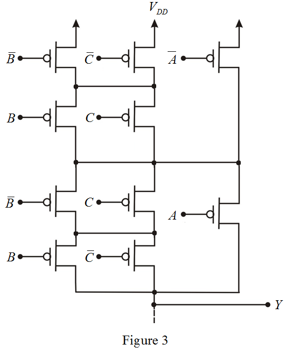

Step 1:
(a)
The output is low when an even number of one’s exists in inputs.
Draw the truth table for three-input even-parity checker.
Table 1
From table 1, write the Boolean expression for .
.
Thus, the Boolean expression for three-input even-parity checker is,
.
Step 2:
(b)
The pull-down network can be most directly synthesized by expressing as a function of un-complemented variables. If any complemented variables are appear in the expression, additional inverters are required to generate the network.
as a function of un-complemented variables. If any complemented variables are appear in the expression, additional inverters are required to generate the network.
The number of NMOS transistors required for pull-down network is,
Draw the pull-down network directly from the expression for .
.
Step 3:
(c)
The Boolean expression can be simplified as follows.
The number of NMOS transistors required for pull-down network is,
Redraw the pull-down network directly from the expression for.
Step 4:
(d)
The pull up network is dual of pull down network. The pull-up network can be most directly synthesized by expressing as a function of un-complemented variables and then applying the un-complemented variables to the gates of the PMOS transistors. If any complemented variables are appear in the expression, additional inverters are required to generate the network.
as a function of un-complemented variables and then applying the un-complemented variables to the gates of the PMOS transistors. If any complemented variables are appear in the expression, additional inverters are required to generate the network.
Draw the pull-up network for active-low output of even-parity checker.

Step 5:
Sketch the complete CMOS realization for active-low output of even-parity checker.
Thus, the complete CMOS realization for active-low output of even-parity checker is sketched as shown in Figure 4.